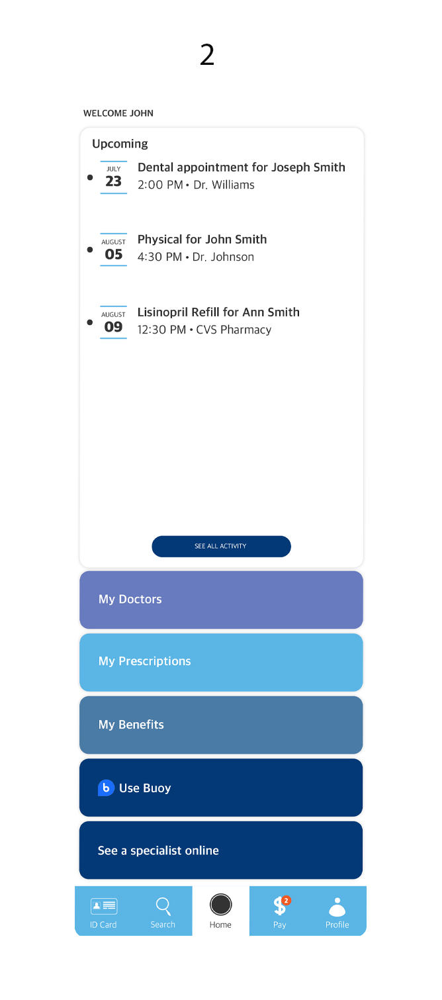

A platform which addresses the major problems of today's healthcare.
The healthcare system is flawed in many ways.
Design and simplify healthcare’s outdated and complex tasks into user-friendly features that are directly accessible from every-day devices.
In Cure’s first iteration (1), the homepage was to include only two options: access buoy or consult a specialist online. However, in the second iteration (2), I proposed to add in addition to the two options, a personalized dashboard which regulates doctor’s appointments, prescriptions, and other information that makes the homepage more handy to daily healthcare needs.
This allows users to immediately focus their search on the type of provider they are looking for before any consideration of distance or prices.
Filters allow users to personalize their results by setting an appropriate by price and/or distance, which are 2 crucial factors to consider when choosing the right match. With Cure's search engine, users can also more easily compare different providers as opposed to searching on an internet browser.
Each individual ID card is stripped to its core identification information, and is directly accessible from the toolbar. These two features provide simplicity and quick accessibility. Users can also store their family member ID cards alongside their own, making ID cards even more accessible for everyone.
Medical Bills are notorious for their complicated listings of not only the price of the treatment, but its numerous additional fees. One crucial goal is to implement a simplified bill so the patient knows exactly what he or she is paying for.
Initial thought process was to think of a symbol that could represent health and mobility. For the logo, I wanted to highlight a key feature of Cure that differentiates it from other healthcare businesses, which is approachability and simplicity. After some experimentation, we settled on using a tangible mascot such as the bird, which helps bring a more personable and recognizable image to the business in comparison to the typically clinical images of other healthcare busniesses. Birds are also known to symbolize change and transparency, which very much align with Cure's mission.
Upon further research, I proposed to change the branding with a more approachable font. Lowercase logos are known to be more approachable as opposed to capitalized or all upper-case letters, hence another image of Cure that I wanted to portray. However, I still manage to portray a clean and professional feel with the sans-serif font.
From my research alongside preferences of Cure's marketing team, color schemes of blue and cool colors are associated with health and reliability. Furthermore, a minimalistic style allows for a clean user interface, once again bringing simplicity into focus.
Some of the features I wish to implement in future editions include: a favoriting system where users can favorite or save certain providers and access them later
As my very first and ongoing process of UI/UX project, I definitely gained great insight into what is appropriate UI/UX and what is not within the span of one year. Given this was my first introduction, I definitely came into the project prioritizing visual design elements and given the business a unique identity. However, I soon quickly realized I needed to be much more attentive of what works better for users.